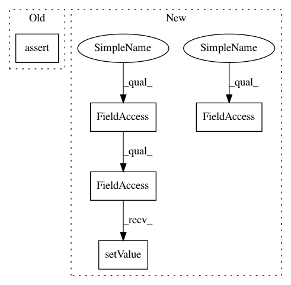

74272098402bb0882e2562760954d3bcec6c1ec5,tests/test_applets/featureSelection/testNewFeatureSelection.py,TestCompareOpFeatureSelectionToOld,test_output,#TestCompareOpFeatureSelectionToOld#,104
Before Change
for key in output.meta.keys():
if output.meta[key] != outputOld.meta[key]:
print(f"{key}: {output.meta[key]}, {outputOld.meta[key]}\n")
assert output.meta == outputOld.meta
for roi in [
[slice(0, 1), slice(0, 1), slice(None), slice(None), slice(0, 1)],
[slice(None), 0, slice(None), slice(None), slice(0, 1)],
After Change
yield self.compare, result, resultOld
def test_output(self):
self.opFeatures.InputImage[0].disconnect()
// Configure selection matrix
sel = numpy.zeros((6, 5), dtype=bool)
sel[0, 1] = True // Gaussian
sel[1, 2] = True // L of G
sel[2, 3] = True // ST EVs
sel[3, 2] = True // H of G EVs
sel[4, 3] = True // GGM
sel[5, 2] = True // Diff of G
if DEBUG:
// set vigra filter to compare to here
scales = [1.6]
vigra_fn = vigra.filters.gaussianSmoothing
self.opFeatures.SelectionMatrix.setValue(sel)
self.opFeatures.ComputeIn2d.setValue([False] * 6)
self.opFeaturesOld.SelectionMatrix.setValue(sel)
data = vigra.taggedView(
numpy.resize(numpy.random.rand(2 * 18 * 19 * 20 * 3), (2, 18, 19, 20, 3)).astype(numpy.float32),
In pattern: SUPERPATTERN
Frequency: 3
Non-data size: 5
Instances
Project Name: ilastik/ilastik
Commit Name: 74272098402bb0882e2562760954d3bcec6c1ec5
Time: 2018-06-15
Author: fynn.beuttenmueller@iwr.uni-heidelberg.de
File Name: tests/test_applets/featureSelection/testNewFeatureSelection.py
Class Name: TestCompareOpFeatureSelectionToOld
Method Name: test_output
Project Name: ilastik/ilastik
Commit Name: 6940499d4234cafa415efbdaad3d141258c0d582
Time: 2018-10-05
Author: fynn.beuttenmueller@iwr.uni-heidelberg.de
File Name: ilastik/applets/featureSelection/featureSelectionGui.py
Class Name: FeatureSelectionGui
Method Name: onFeatureButtonClicked
Project Name: ilastik/ilastik
Commit Name: bd99a5410be8f4b51c664ccf6df9b1990e8588e8
Time: 2014-04-14
Author: webmaster@burgerdev.de
File Name: ilastik/applets/thresholdTwoLevels/_OpGraphCut.py
Class Name: OpGraphCut
Method Name: setupOutputs